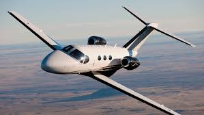

Cessna Citation Mustang
Jato Executivo Leve
- Passageiros: 4
- Alcance: 2.000 km
O Cessna Citation Mustang (Model 510) é um jato executivo leve (VLJ) de dois motores Pratt & Whitney PW615F, operável por um único piloto, com alcance de cerca de 2.000 km, velocidade de cruzeiro de 630 km/h, teto de 41.000 pés e cabine para até 4 passageiros, produzido entre 2006 e 2017.